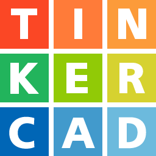

Nutripatitas - Alimentador automático para pets
O Nutripatitas é um alimentador automático para cães e gatos com conectividade Wi-Fi, que permite aos usuários controlarem as porções e os intervalos das refeições dos seus pets via aplicativo. O projeto foi apresentado na Mostra Científica e Tecnológica durante o evento Mundo SENAI, onde conquistamos o 3º lugar. A proposta foi desenvolver um protótipo funcional e sustentável, utilizando filamento PETG e componentes eletrônicos de baixo custo, com o objetivo de auxiliar os tutores no controle da alimentação saudável de seus pets — mesmo quando estão fora de casa — permitindo seguir dietas específicas conforme o porte e a idade do animal.
Para o hardware do projeto, utilizamos componentes eletrônicos como o microcontrolador ESP32, que possui Wi-Fi integrado, dois sensores de peso (células de carga), cada um com um conversor HX711 para a calibração do peso da ração no reservatório e no prato do alimentador, um servo motor SG90 para o controle da saída da ração, além de resistores, fios e LEDs para fornecer feedback visual no case do dispositivo. No software, o código do ESP32 foi desenvolvido em C++ na plataforma Arduino IDE, enquanto o aplicativo Nutripatitas foi criado com XML e Java no Android Studio.
Neste projeto, não atuei tanto no desenvolvimento do código, pois fiquei responsável pela modelagem e montagem do protótipo. Foi um desafio para mim aprender a trabalhar com o Tinkercad, mas foi gratificante ver as peças impressas em mãos, identificar erros e pensar em melhorias e adaptações para que o protótipo ficasse funcional para a apresentação.
Tecnologias utilizadas
 XML
XML JAVA
JAVA ANDROID STUDIO
ANDROID STUDIO- TINKERCAD
- ARDUINO IDE
Funcionalidades do projeto
- Definir a quantidade de ração;
- Definir intervalo das refeições ;
- Visualizar a rede conectada;
- Monitorar a quantidade de ração no reservatório;
- Monitorar a porção do prato;
- Monitorar o intervalo entre as refeições;
- Dispensar a ração;
- Mostrar o nível do reservatório através dos leds;
Dificuldades enfrentadas
- Desenvolver o código para conectividade Wi-Fi;
- Fazer o aplicativo trocar informações com o alimentador
- Modelar o case do alimentador;
- Realizar adaptações no case do alimentador
- Montar o circuito eletrônico;
- Realizar a calibragem dos sensores célula carga;
- Produzir um artigo científico sobre o projeto;
Aprendizados
- Trabalho em equipe;
- Programação aplicada em microcontroladores;
- Modelagem 3D;
- Eletrônica;
Melhorias futuras
- Substituir os sensores de peso;
- Melhorar a estética do produto;
- Melhorias no dispenser para aumentar o fluxo da ração;